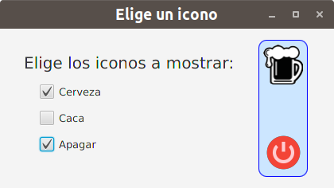

JavaFX
Elige las imágenes a mostrar
Esta aplicación es parecida a las anteriores, pero utiliza casillas de verificación para indicar las imágenes a mostrar. En este caso las opciones no son excluyentes, por lo que podemos mostrar todas las imágenes, algunas o ninguna.
En este caso hemos vuelto a utilizar el método setOnAction de cada casilla de verificación para registrar el manejador y hemos utilizado un sólo manejador en el que distinguimos el origen del evento.
La interfaz de la aplicación es la que se muestra a continuación.

El código asociado es el que sigue.
package javafx.eventos;
import javafx.application.Application;
import javafx.event.ActionEvent;
import javafx.geometry.Insets;
import javafx.geometry.Pos;
import javafx.scene.Scene;
import javafx.scene.control.CheckBox;
import javafx.scene.control.Label;
import javafx.scene.image.Image;
import javafx.scene.image.ImageView;
import javafx.scene.layout.HBox;
import javafx.scene.layout.VBox;
import javafx.scene.text.Font;
import javafx.stage.Stage;
public class SeleccionCasillaVerificacion extends Application {
private CheckBox cbCerveza, cbCaca, cbApagar;
private Label lbElige;
private ImageView ivCerveza, ivCaca, ivApagar;
private Image imgCerveza = new Image(getClass().getResourceAsStream("../imagenes/iconoCerveza.png"), 50, 50, true, true);
private Image imgCaca = new Image(getClass().getResourceAsStream("../imagenes/iconoCaca.png"), 50, 50, true, true);
private Image imgApagar = new Image(getClass().getResourceAsStream("../imagenes/iconoApagar.png"), 50, 50, true, true);
private void muestraIconos(ActionEvent e) {
CheckBox pulsado = (CheckBox)e.getSource();
ImageView iv = null;
Image img = null;
if (pulsado == cbCerveza) {
iv = ivCerveza;
img = imgCerveza;
} else if (pulsado == cbCaca) {
iv = ivCaca;
img = imgCaca;
} else if (pulsado == cbApagar) {
iv = ivApagar;
img = imgApagar;
}
if (iv != null)
iv.setImage(pulsado.isSelected() ? img : null);
}
@Override
public void start(Stage escenarioPrincipal) {
try {
HBox raiz = new HBox(20);
raiz.setPadding(new Insets(20));
raiz.setAlignment(Pos.CENTER_LEFT);
VBox vbOpciones =new VBox(15);
vbOpciones.setPadding(new Insets(10));
lbElige = new Label("Elige los iconos a mostrar:");
lbElige.setFont(Font.font(20));
cbCerveza = new CheckBox("Cerveza");
cbCerveza.setOnAction(e -> muestraIconos(e));
cbCaca = new CheckBox("Caca");
cbCaca.setOnAction(e -> muestraIconos(e));
cbApagar = new CheckBox("Apagar");
cbApagar.setOnAction(e -> muestraIconos(e));
Insets margen = new Insets(0, 0, 0, 20);
VBox.setMargin(cbCerveza, margen);
VBox.setMargin(cbCaca, margen);
VBox.setMargin(cbApagar, margen);
vbOpciones.getChildren().addAll(lbElige, cbCerveza, cbCaca, cbApagar);
VBox vbIconos = new VBox(5);
vbIconos.setPadding(new Insets(5));
vbIconos.setStyle("-fx-border-color: blue; "
+ "-fx-border-radius: 10; "
+ "-fx-background-color: #cce6ff;"
+ "-fx-background-radius: 10");
ivCerveza = new ImageView();
ivCerveza.setFitHeight(50);
ivCerveza.setFitWidth(50);
ivCaca = new ImageView();
ivCaca.setFitHeight(50);
ivCaca.setFitWidth(50);
ivApagar = new ImageView();
ivApagar.setFitHeight(50);
ivApagar.setFitWidth(50);
vbIconos.getChildren().addAll(ivCerveza, ivCaca, ivApagar);
raiz.getChildren().addAll(vbOpciones, vbIconos);
Scene escena = new Scene(raiz, 420, 200);
escenarioPrincipal.setTitle("Elige un icono");
escenarioPrincipal.setScene(escena);
escenarioPrincipal.show();
} catch(Exception e) {
e.printStackTrace();
}
}
public static void main(String[] args) {
launch(args);
}
}